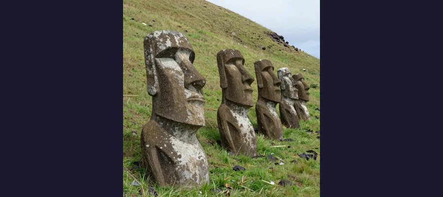
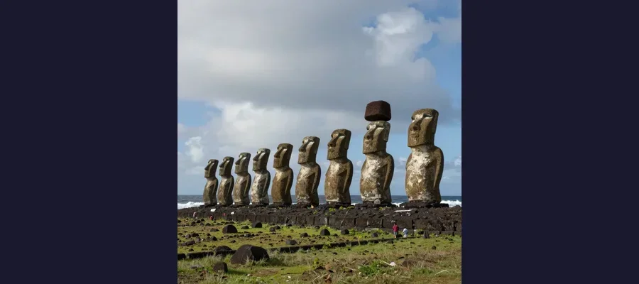

Easter Island's Moai Statues: Who Built Them and Why Did They Stop?

The 887 moai statues of Easter Island have fascinated researchers for centuries. Recent discoveries about how they were moved and why construction suddenly stopped may rewrite what we know about Rapa Nui civilization.
On Easter Sunday, 1722, Dutch Admiral Jacob Roggeveen anchored his three ships off a tiny speck of volcanic rock in the southeastern Pacific Ocean, roughly 2,200 miles west of Chile. He expected to find perhaps a small settlement. Instead, his crew beheld a landscape unlike anything in European experience: hundreds of colossal stone heads — some towering 30 feet high — gazing inland from stone platforms that ringed the coastline like sentinels. The island had no trees large enough to build boats, no rivers, no draft animals, and only about 2,000 inhabitants. Yet scattered across its 63 square miles stood nearly 900 monumental stone figures, each carved from a single block of compressed volcanic ash.
Roggeveen had stumbled upon Rapa Nui — known to the outside world as Easter Island — and the most extraordinary feat of stone engineering in Polynesian history. Three centuries later, the moai still guard their secrets. Who carved them, and why? How did a population of perhaps 3,000 people transport 80-ton statues across miles of rugged terrain without wheels, metal tools, or beasts of burden? And why, after centuries of construction, did they suddenly stop?
Born of Volcanic Fire: The Quarry at Rano Raraku
The story of the moai begins inside a crater. Rano Raraku, an extinct volcano on the eastern side of the island, served as the birthplace for nearly every moai ever carved. The inner slopes of the crater are made of compacted volcanic ash called lapilli tuff — a soft, workable stone that hardens on exposure to air. It was the perfect material for carving, and the Rapa Nui exploited it with remarkable ambition.
Today, approximately 400 moai remain in various stages of completion within the quarry, some still attached to the volcanic bedrock as if their carvers had simply walked away mid-project. The largest unfinished moai, still lying in its carved niche, measures an astonishing 69 feet (21 meters) in length and would have weighed an estimated 270 tons — a colossus that was never meant to stand, or perhaps was never finished because its creators ran out of time, resources, or faith in the enterprise.
Carving was done primarily with basalt hand picks called toki — simple tools, but wielded with extraordinary skill. Workers would chip away at the tuff around the statue's outline, gradually freeing it from the bedrock while leaving a thin keel of stone attaching it to the cliff face. Once the keel was broken, the statue was slid down the slope to a prepared area where its back was carved and details refined.
- 🗿 The Rapa Nui produced at least 887 moai between approximately 1250 and 1500 CE
- 📏 The tallest successfully erected moai, called Paro, stands 33 feet (10 meters) tall and weighs approximately 82 tons
- ⛰️ About 95% of all moai were carved from the lapilli tuff of Rano Raraku
- 🪨 The heaviest moai ever raised onto a platform weighed an estimated 86 tons
- 🔍 In 2025, archaeologists used 11,000 photographs to create the first complete 3D digital model of Rano Raraku, revealing 30 separate workshop areas likely belonging to different clan groups
🌋 Hidden Bodies
The iconic "heads" of Easter Island are actually full-bodied statues with torsos, arms, and hands. Many of the moai photographed at Rano Raraku appear to be just heads because their bodies are buried under centuries of erosion and sediment that filled the quarry slopes. Excavations have revealed elaborate carvings on the buried portions, including detailed petroglyphs and markings on the backs of the statues.

The iconic stone heads at Rano Raraku quarry are actually full-bodied statues buried up to their chins by centuries of erosion
Eyes, Topknots, and the Power of Mana
The moai we see today — blank-eyed, gray stone figures — are actually incomplete. When first erected, the most important statues received white coral eyes with red stone pupils, inserted into precisely carved sockets. Archaeologist Jo Anne Van Tilburg of UCLA, who has spent decades cataloguing and studying the moai, has noted that the insertion of the eyes was likely the culminating ritual act — the moment when the statue became a living vessel for mana, the spiritual power of the ancestor it represented.
Some moai also wore pukao — cylindrical topknots carved from red scoria, a lightweight volcanic stone quarried from a different site called Puna Pau. The largest pukao weigh up to 12 tons and would have been placed atop the moai after the statue was raised on its platform. The pukao may have represented hair styled in a topknot, a marker of high status in Rapa Nui culture.
The statues were erected on ahu — massive stone platforms that served as ceremonial centers and burial grounds. The largest, Ahu Tongariki, supports 15 moai and was built using an estimated 12,000 cubic meters of stone. These platforms lined the island's coastline, with the moai facing inland toward the villages, their gaze perpetually fixed on the descendants they were meant to protect.
"Once You Get It Moving, It Isn't Hard at All": How the Moai Walked
For generations, the question of how the moai were transported has been the island's most debated mystery. The Rapa Nui had no wheels, no pulleys, no metal tools, no large animals. The distance from Rano Raraku to some ahu platforms exceeds 11 miles. The terrain is uneven, rocky, and steep. And yet hundreds of statues made the journey successfully.
The oldest and most persistent theory held that the statues were dragged horizontally on wooden sledges or log rollers. This explanation, however, required enormous quantities of timber — timber that, by the time Europeans arrived, no longer existed on the island. It also required a massive labor force that the small population may not have been able to provide.
The Walking Statues Theory
In 2011, archaeologists Terry Hunt of the University of Arizona and Carl Lipo of Binghamton University proposed a radical alternative: the moai were not dragged — they walked. Their hypothesis, initially met with deep skepticism, has since been powerfully supported by experimental and computational evidence.
The key insight was in the statues' shape. The moai were not symmetrically cylindrical — they had wide, D-shaped bases and a deliberate forward lean of 5 to 15 degrees. Lipo and Hunt recognized that these design features would make the statues inherently unstable in a specific way: they would naturally tip forward, and controlled rocking from side to side would create a shuffling, walking motion.
In their most dramatic demonstration, published in October 2025 in The Journal of Archaeological Science, the team built a 4.35-ton concrete replica and showed that just 18 people pulling ropes could walk the statue 100 meters in only 40 minutes. "Once you get it moving, it isn't hard at all," Lipo told reporters. "People are pulling with one arm. It conserves energy, and it moves really quickly."
The team supplemented the physical experiment with high-resolution 3D models of 962 moai, confirming that the design features enabling the rocking motion were consistent across statues of different sizes. They also identified remnants of roadways — cleared, level paths radiating from Rano Raraku — that would have served as transport corridors.
🚶♂️ The Fallen Roadside Moai
Along the ancient roads leading from Rano Raraku, 62 moai lie face-down in the dirt, apparently abandoned in transit. For decades, researchers debated whether these were failures — statues that fell and couldn't be recovered — or deliberately placed markers along the route. Lipo and Hunt's 2025 study argued that many of these fallen statues show damage patterns consistent with tipping during the walking process, suggesting that even the master transport teams occasionally lost a statue to an uneven road or a misstep.

Fifteen restored moai stand watch on Ahu Tongariki, the largest ahu platform on Easter Island
The Collapse That Wasn't: Rethinking Rapa Nui's Story
For decades, the standard narrative of Easter Island was one of ecological suicide. In this telling, popularized by geographer Jared Diamond's 2005 bestseller Collapse, the Rapa Nui people recklessly cut down their palm forests to build and transport the moai, triggering soil erosion, agricultural collapse, famine, and brutal warfare. By the time Europeans arrived, the society had supposedly destroyed itself — a cautionary tale of hubris and environmental mismanagement.
It's a compelling story. The problem, according to a growing body of evidence, is that it may not be true.
New Evidence for Resilience
A landmark 2024 DNA study published in Nature, conducted in collaboration with the Rapanui community, reconstructed the genomic history of the island's population and found no evidence of a dramatic population crash before European contact. Archaeogeneticist Kathrin Naegele of the Max Planck Institute called the study "the final nail in the coffin of this collapse narrative."
Hunt and Lipo have argued that the Rapanui were not self-destructive but remarkably resilient. Their research, published in the Journal of Archaeological Science, showed that the construction of ahu platforms continued well after the supposed collapse date, and that the island's population was likely never as large as earlier estimates suggested — perhaps 3,000 to 4,000 people at its peak, not the 15,000+ sometimes claimed.
The deforestation, they argue, was driven primarily by introduced Polynesian rats that ate palm seeds, not by reckless logging. And far from collapsing into warfare, the Rapanui developed the famous Birdman competition — a ritual contest in which representatives of different clans raced to retrieve the first sooty tern egg of the season from a nearby islet. It was a sophisticated system of political organization that replaced the moai-building era without violence.
🐀 The Rat Deforestation Theory
Hunt and Lipo's analysis of fossil pollen and seed deposits revealed that nearly all preserved palm nuts on the island show gnaw marks from Polynesian rats (Rattus exulans), which arrived with the first settlers. The rats devoured the seeds faster than the trees could reproduce, gradually eliminating the palm forest over centuries — not through a sudden logging frenzy. The human role in deforestation was real, but the rats were the primary culprits.
Thirty Workshops, One Vision: The Social Organization of Moai Building
One of the most revealing recent discoveries about the moai comes not from a new statue but from a new way of seeing. In December 2025, Lipo, Hunt, and their colleagues published a study in PLOS One describing the first-ever complete 3D digital model of Rano Raraku, created from 11,000 high-resolution photographs. The model revealed that the quarry was organized into at least 30 distinct workshop areas, each producing its own series of statues.
This finding supports a view of Rapa Nui society not as a centrally organized kingdom but as a network of cooperative, semi-autonomous clan groups, each responsible for carving and transporting its own moai. The similarities between statues from different workshops — consistent proportions, stylistic conventions, and the forward-leaning shape — suggest a shared cultural tradition transmitted through imitation rather than centralized command, much like the remarkable consistency seen in the construction of the Great Pyramids of Giza.
The transport routes also told a story: moai left the quarry in multiple directions, heading toward different ahu platforms along the coast. There was no single assembly line. Instead, each group managed its own production pipeline from quarry to platform — a decentralized system that would have distributed labor demands across the island and reduced the risk of resource conflicts.
What the Moai Meant
The prevailing interpretation is that the moai represented deified ancestors — specific chiefs or lineage founders whose mana could be channeled through the statues to benefit their living descendants. The placement of moai on ahu platforms, facing the villages with their backs to the sea, reinforces this idea: they were watchers, protectors, intermediaries between the living and the dead.
The sheer scale of the enterprise — hundreds of statues, decades of work, enormous collective effort — speaks to a society in which ancestor veneration was the organizing principle of community life. Building a moai was not just a religious act; it was a statement of group identity, a demonstration of skill and organization, and a way of competing peacefully with neighboring clans.
This interpretation connects the moai to a broader pattern of monumental ancestor veneration found across Polynesia and indeed around the world — from the Terracotta Army of China to the stone figures of Stonehenge and the carved heads of the Nazca civilization. Humans have always built enormous things to honor their dead.
🪨 Stones That Still Speak
The moai of Easter Island stand as both a triumph and an enigma. Thanks to the work of researchers like Carl Lipo, Terry Hunt, and Jo Anne Van Tilburg, we now understand more than ever about how they were carved, transported, and erected — and the "walking" theory, validated by 3D modeling and physical experiments, has transformed one of archaeology's greatest mysteries into a solved problem. But deeper questions remain. What did the Rapanui believe about the ancestors they immortalized in stone? What stories were told as a statue was walked for miles across the island? And what was it like on the day the community decided, after centuries of tradition, that the last moai had been placed and no more would be made? The stones themselves cannot answer. But they continue to face inward, watching — patient, massive, and enduring.
Frequently Asked Questions
How many moai statues are there on Easter Island?
A total of 887 moai have been documented on Rapa Nui. Of these, approximately 400 remain in the Rano Raraku quarry in various stages of completion, about 62 lie along transport roads, and the remainder were successfully erected on ahu platforms around the island's perimeter.
How were the moai statues transported?
The leading explanation, supported by experimental and computational evidence from archaeologists Carl Lipo and Terry Hunt, is that the moai were "walked" upright using a rocking motion. Teams of as few as 18 people pulled ropes attached to the statue, creating a side-to-side shuffling motion that moved the statue forward. Experiments in 2025 demonstrated that a 4.35-ton replica could be moved 100 meters in just 40 minutes using this technique.
Why did the Rapa Nui stop building moai?
The exact reason remains debated, but the most likely explanation involves a cultural shift rather than a catastrophic collapse. Around the 16th century, the society transitioned from ancestor veneration centered on the moai to the Birdman (Tangata Manu) cult, a new political and religious system. Recent DNA and archaeological evidence suggests this was not a desperate response to ecological collapse, as previously believed, but an orderly cultural evolution.
Are the Easter Island heads really just heads?
No. The famous "heads" are actually full-bodied statues with torsos, arms, and hands carved in relief. Many of the moai at the Rano Raraku quarry appear to be only heads because centuries of erosion and sediment have buried their bodies up to the chin. Excavations have revealed intricate carvings on the buried torsos, including detailed petroglyphs and markings.
Sources & References
- Wikipedia: Moai — Comprehensive overview of Easter Island's monolithic statues
- Binghamton University: Easter Island's statues actually "walked" — and physics backs it up (October 2025)
- Scientific American: Rethinking Easter Island's Historic "Collapse" (2020)
- Archaeology Magazine: 3D Map of Easter Island Quarry Offers Clues to Moai Construction (December 2025)
- Britannica: Easter Island — History, moai, and cultural overview
📖 Recommended Reading
Want to learn more? Check out The Statues That Walked: Unraveling the Mystery of Easter Island by Terry Hunt & Carl Lipo on Amazon for the definitive account of the walking moai theory. (As an Amazon Associate, we earn from qualifying purchases.)